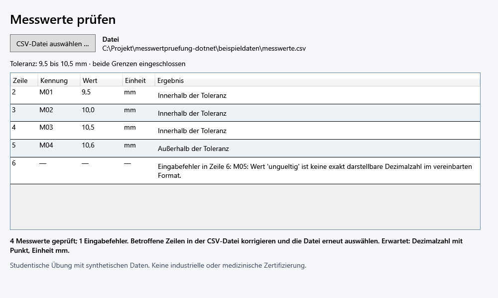
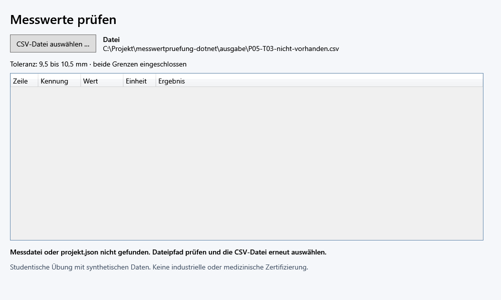

Messwerte prüfen
- Lernprojekt
- Synthetische Daten
- C# · .NET 10 · WPF
Anwendungsfall: eine Messreihe prüfen
Eingabe
Ergebnis des Programms
Ausgabe eines echten Laufs des Projekts
| Zeile | Kennung | Wert | Ergebnis |
|---|
Rohe Konsolenausgabe
Standardausgabe
Standardfehler
Einen Messwert selbst prüfen
Die Windows-Oberfläche (WPF)

